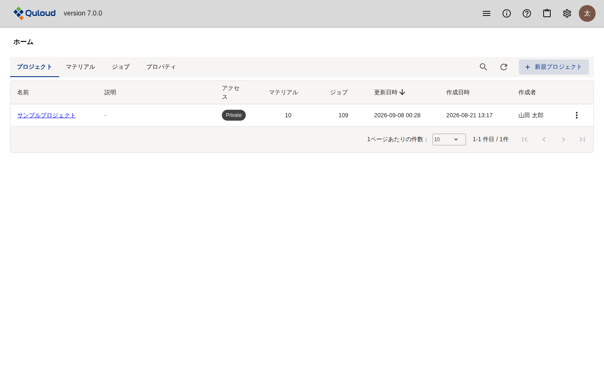
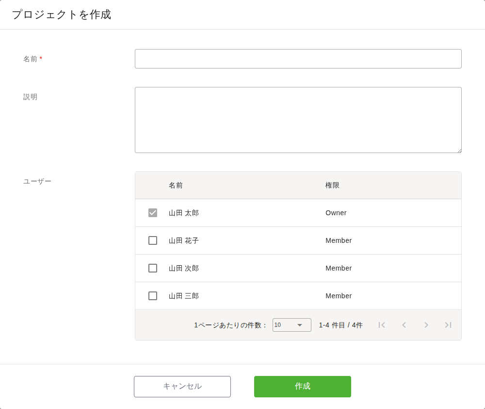
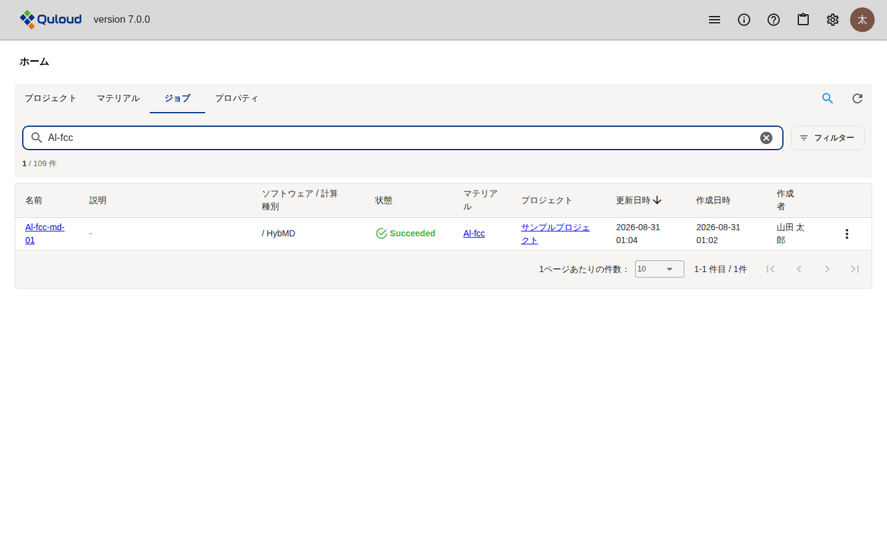
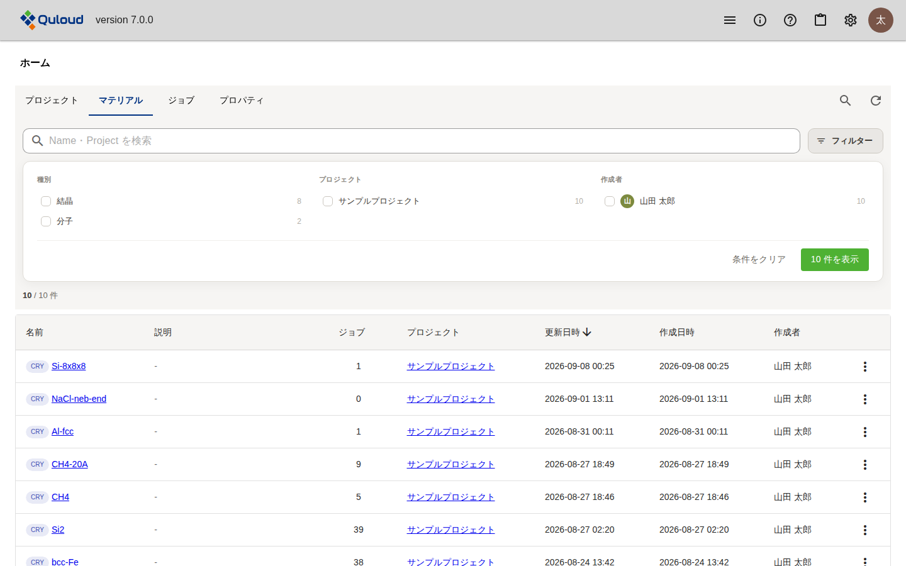

5. ホーム画面
注釈
本章は Quloud Ver.7.0 を対象としています。記載内容の確認日は 2026 年 9 月 8 日です。
5.1. 概要
サインインすると開く画面です。テナントにあるものを 4 つのタブで一覧します。
タブ |
内容 |
|---|---|
プロジェクト |
計算の入れ物です。Material と Job はプロジェクトの中に置かれます。 |
マテリアル |
計算の対象となる原子構造です（Material の登録 の章）。 |
ジョブ |
計算の実行単位です（計算 Job の登録 ・ 計算 Job の実行 の章）。 |
プロパティ |
計算結果を Material にまとめたものです（Property の章）。 |
いずれのタブも同じ作りで、一覧の上に検索と絞り込み、各行の右端に「⋮」の メニューがあります。
注釈
ヘッダーの左端にあるメニューからも、各タブに直接移動できます （ヘッダーメニュー（各種管理） の章）。
5.2. プロジェクト

図 5.1 ホーム画面（プロジェクトのタブ）
「アクセス」は、そのプロジェクトが自分だけのものか（Private）、
テナントのメンバーと共有されているか（Collabo）を表します。
「マテリアル」「ジョブ」の列はそのプロジェクトに属する件数です。
5.2.1. プロジェクトを作る
右上の「＋ 新規プロジェクト」を押します。

図 5.2 「プロジェクトを作成」ダイアログ
名前を入れて「作成」を押します。「ユーザー」で選んだ人とプロジェクトを共有できます。
自分は常に含まれます。共有すると、選んだ人のホーム画面にもこのプロジェクトが現れ、
アクセスが Collabo になります。
5.2.2. プロジェクトの操作
各行の「⋮」から操作します。
項目 |
動作 |
|---|---|
説明 |
説明を表示します。 |
編集 |
名前・説明・共有するメンバーを変更します。 |
削除 |
プロジェクトを削除します。 |
「編集」「削除」が出るのは、自分が作成したプロジェクトか、管理ユーザー（Owner）の 場合だけです。
名前を押すとプロジェクト詳細画面に移り、そのプロジェクトのマテリアル・ジョブ・ プロパティが並びます（Material の登録 の章）。
5.3. マテリアル・ジョブ・プロパティ
いずれもテナント全体の一覧です。名前を押すとそれぞれの画面に移ります。
タブ |
「⋮」からできること |
|---|---|
マテリアル |
説明 / 編集 / 他のプロジェクトへ移動 / 削除 |
ジョブ |
実行またはキャンセル / 説明 / 編集 / 削除（計算 Job の実行 の章） |
プロパティ |
編集（グループ名の変更）/ 削除（Property の章） |

図 5.3 ホーム画面（ジョブのタブ、検索で絞り込んだ状態）
5.4. 検索と絞り込み
タブの右にある虫眼鏡を押すと、検索欄と「フィルター」が現れます。

図 5.4 フィルターのパネル（マテリアルのタブ）
検索欄は名前などの部分一致です。欄の下に「絞り込み後の件数 / 全体の件数」が 表示されます
フィルターは、まとまりごとにチェックを入れて絞り込みます。各項目の右の数字は その条件に当てはまる件数です
条件はまとまりの中では「いずれか」、まとまりの間では「すべて」で組み合わされます
「条件をクリア」でフィルターを外します
絞り込める項目はタブによって異なります。
タブ |
絞り込める項目 |
|---|---|
プロジェクト |
アクセス、作成者 |
マテリアル |
種別（結晶・分子）、プロジェクト、作成者 |
ジョブ |
状態、ソフトウェア、ソフトウェア / 計算種別、作成者 |
プロパティ |
プロジェクト、作成者 |
プロジェクト詳細画面のように 1 つのプロジェクトに絞られている画面では、 「プロジェクト」のまとまりは表示されません。
注釈
プロジェクト詳細画面の各一覧にも、同じ検索と絞り込みがあります。
5.5. 注意事項
一覧は自動では更新されません。 Job の状態などを見直すには、 タブの右にある更新アイコンを押すか、画面を再読み込みしてください。
テナントが利用制限中の場合は画面上部に警告が表示され、プロジェクト・ マテリアル・ジョブの作成ができなくなります（計算 Job の実行 の章）。